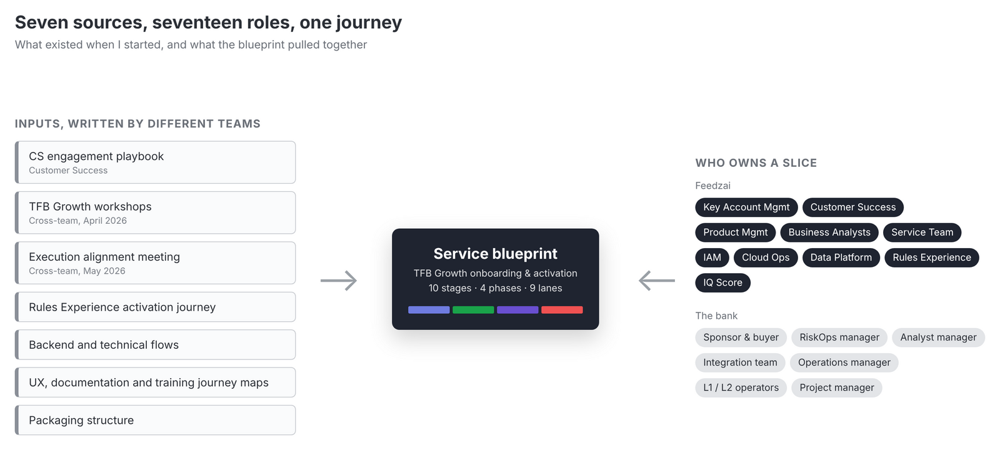
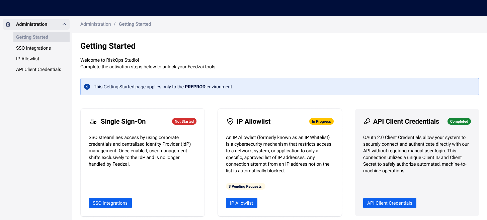
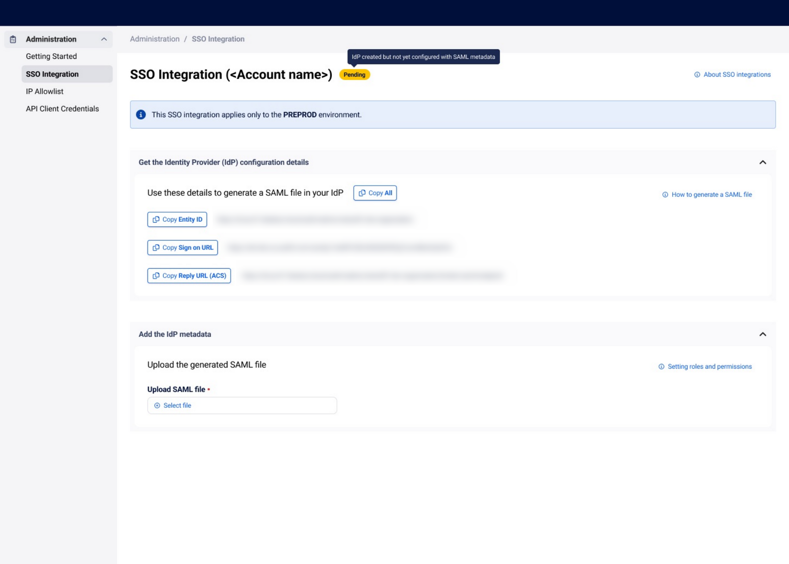
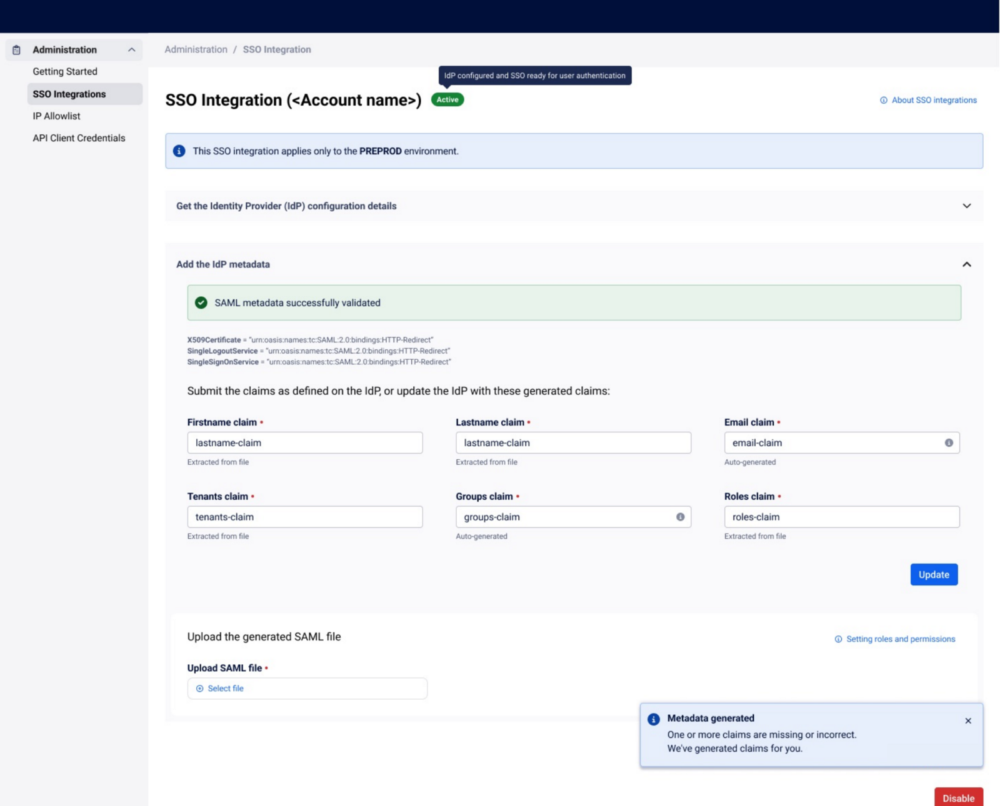
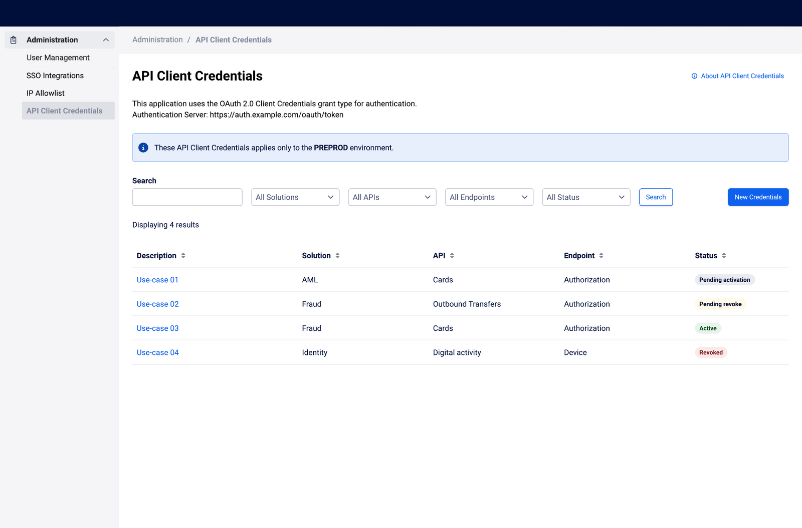
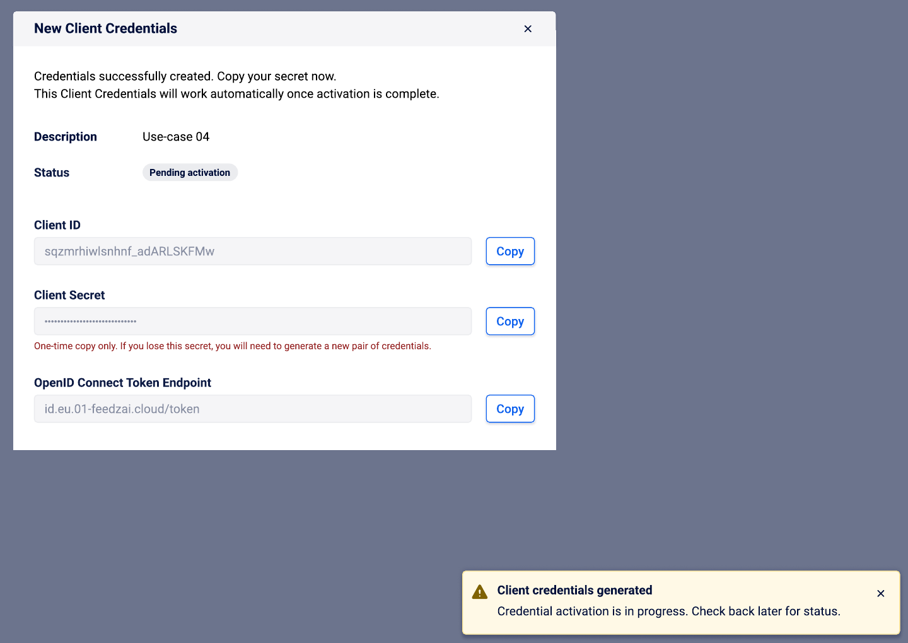
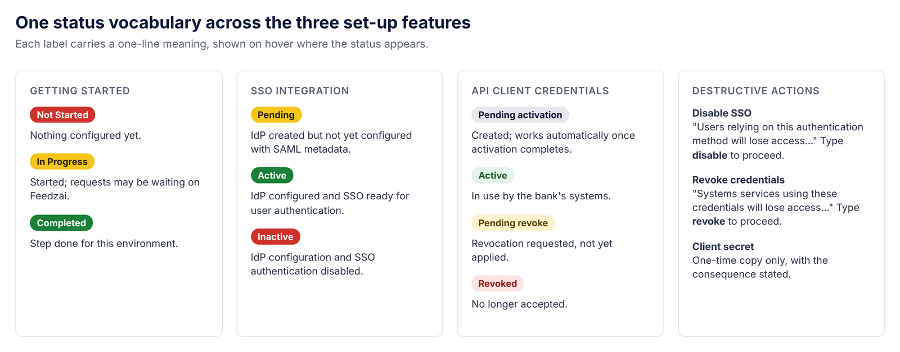

Taking a bank from signed contract to its first working setup on a new, self-service fraud-prevention tier.
Company
Feedzai
When
February to July 2026
My role
Senior product designer, onboarding and activation (contract)
Worked with
User researchers, product managers, engineering
Product
B2B SaaS for banks: TFB Growth in RiskOps Studio
From pending to active. The three set-up features a bank configures first move from red to green as each one is done.
Context and role
Feedzai builds fraud and anti-money-laundering software for banks. RiskOps Studio, rolling out since June 2025, is its unified platform, gradually replacing the separate Fraud, AML and Identity applications. In 2026 Feedzai was preparing TFB Growth, a lighter and more self-service entry tier of Transaction Fraud for Banking, due by the end of Q2.
I joined as a contract senior product designer, the main designer for onboarding and activation.
Service blueprint: I helped researchers and product managers build the onboarding and activation blueprint, from the internal ticket that starts activation to the bank's first value.
Three set-up features, which I led: single sign-on (SSO), IP allowlist and API client credentials, the first things a bank configures.
Delivery: I worked with engineering in Kiro, a spec-driven AI tool, to turn designs into specs and design-system components.
The problem: a journey nobody could see whole
The Growth onboarding journey hadn't been decided yet. What was known sat in seven documents from different teams, each covering part of the journey, and they didn't always agree. Ten Feedzai teams and up to seven roles at the bank each owned a slice.
The first step was also the most manual. Customer success, project managers and the service team collected identity-provider details, IP lists and API key requests by email and on calls. The plan allowed about 8 hours per customer for this back and forth.

The starting point. Seven sources and seventeen roles, each holding part of the onboarding journey.
What research changed
With the researchers and product managers, we treated the existing material as research data. I used AI to pull steps, actors, systems and open questions out of each source. We then checked them against the original documents and with the teams that owned them, and logged conflicts instead of picking a side.
The result was a service blueprint of 10 stages in 4 phases, from the contract to support and expansion: what the bank sees above the line, and the teams, systems and support behind it.
Onboarding and activation service blueprint. Four phases (internal activation, the bank's first touch, configuration and go-live), with scope, related topics and a shared glossary so every team uses the same words. Select to open full size.
The blueprint showed where the set-up features had to do work people were doing by hand:
We sawThe first login was a hand-off, not a product moment.
So I designedGetting Started, a landing page for first-time users with the three set-up steps and the status of each.
We sawEach environment needs its own setup, and it is easy to configure the wrong one.
So I designedEvery set-up page names its environment before anything else.
We sawSet-up errors were found late, by support.
So I designedSSO that checks the SAML file on upload, shows each required claim as found or missing, and generates the missing ones.
We sawSecrets and access changes can lock people or systems out.
So I designedA client secret shown once, with the consequence stated, and type-to-confirm for disabling SSO or revoking credentials.
Design decisions
Each set-up feature is a short path from pending to active, built from RiskOps Studio design-system components.
Give the first login a job
Getting Started lists SSO, IP allowlist and API client credentials, each with its status and pending requests, under the name of the environment. The bank's admin knows what to do first and what is still waiting on someone else.

Getting Started. Three steps, each with its status, and the environment named at the top.
Fix errors at upload, not in a support ticket
SSO shows the values the identity provider needs, ready to copy, then takes the SAML file. The file is checked as it is uploaded: each required claim shows as found or missing, and missing ones are generated for the admin to copy back, instead of failing later.

Pending. Copy the values, upload the file.

Active. The file validated; missing claims generated.
Guardrails where mistakes are expensive
API credentials are listed per use case, from pending activation to revoked. A client secret is shown once, with what happens if it is lost stated next to it. Destructive actions ask the admin to type the action to confirm.
Trade-off: typing to confirm is slower. It is used only where a mistake locks people or systems out.

Credentials. One per use case, each with its status.

One-time secret. Copy it now; the consequence is stated.
One status vocabulary
The three features share the same status labels, each explained in one line on hover, and the same type-to-confirm pattern. The IP allowlist follows the same patterns, so learning one feature teaches the other two.

Shared statuses. The same labels and meanings in all three features.
Scope: the end of Q2, not an ideal future
The blueprint drew a clear line between what Growth includes now and what comes later, so teams could commit to it.
Human help now, a wizard later. For Q2, customer success and the service team still guide the bank's admin through setup, so I designed the set-up features for both to use the same screens. A fully guided wizard was logged for Q3.
Open questions stay visible. Authentication, Case Manager activation and partner involvement were still unresolved. The blueprint marks them for a decision instead of hiding them.
Use the name the bank bought. Banks buy "TFB" and may not recognise "Studio", so screen copy and documentation name the product first.
What it delivered
7 → 1sources merged into one working blueprintDocuments from different teams, reconciled.
3self-service set-up features designedSSO, IP allowlist and API client credentials.
~8 hof manual set-up per customerThe back and forth that self-service aims to remove.
Lessons
Existing material is research data
Seven documents from different teams already held most of the answers. The work was reconciling them and making the conflicts visible, and AI made that fast enough to do properly.
Design the first ten minutes
For an admin product, the first login and the first error message build or lose trust long before anyone sees a dashboard.